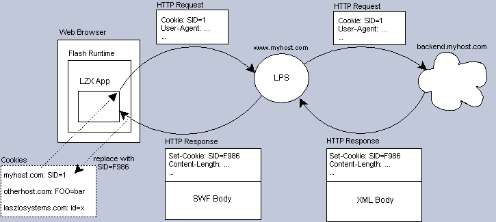

Cookies and Sessions
Note. Use of cookies requires the presence of the OpenLaszlo Server.
Applications that use cookies cannot be delployed serverlessly (SOLO).
Using cookies
Because HTTP is stateless, each request to the server is seen as an
independent visit by an anonymous client. Cookies are used to maintain session
state by uniquely identifying clients between requests. Servers can then use the
session to save application data, track users, deliver personalized information,
etc. Cookies are received by HTTP servers through the Cookie request
header and set using the Set-Cookie response header.
For security reasons, only cookies for a requested domain are sent up to the
server. A great reference for cookie information is the Unofficial Cookie FAQ at
cookiecentral.com.
Proxying request and response headers
The OpenLaszlo Server proxies client request headers and backend server response
headers. Because clients always talk to the server, only headers in the OpenLaszlo Server domain
will be sent. If a client makes a request to a server that has a different
domain than the servere, incorrect headers will be forwarded.
For example, assume your OpenLaszlo Server is hosted in the myhost.com domain. If your
application makes a request to a server that lives in myhost.com, then the right
headers will be sent. If the server is hosted in anotherhost.com, then the
client's myhost.com headers will be incorrectly proxied.
Lifecycle of a data request
As previously mentioned, all http data requests have to go through the
OpenLaszlo Server. When the server receives a request, it proxies the request headers (like the
Cookie header, if found) and makes a request to the destination server
on behalf of the application. When the backend data is returned, the server proxies
the response headers (like the Set-Cookie header, if found) and compiles
the XML into bytecode. Once the bytecode is ready, it is sent down to the
application.

Things to consider when deploying sessioned applications
Things to keep in mind when building sessioned OpenLaszlo apps:
- Make sure your authentication server's host has the same domain as your
OpenLaszlo Server
- Because your OpenLaszlo application lives in the Flash runtime, there's no
way to directly access your browser's cookies. A trick you can use is to
make a data request to a JSP (or server) that responds with the cookie
embedded in body of the response. See the next section for an example of how
to do this.
Getting at cookies from LZX
This section demonstrates how an OpenLaszlo application can get at its cookie by
calling a JSP. The JSP will parse and display the cookie value from the
application and return the data to the application as XML. The application will
then display the information using a text datapath.
<canvas width="500" height="200">
<dataset name="request" type="http" src="cookie.jsp" request="true" />
<view x="20" y="20" layout="spacing: 5" >
<text><b>cookie: </b></text>
<text resize="true" selectable="true" multiline="true" width="450"
datapath="request:/cookie[1]/text()" />
</view>
</canvas>
The LZX expects the format of the returned XML to look like:
<cookie>COOKIE</cookie>
Copy the LZX code and save it in a file called cookie.lzx. Make sure you
can access this file using your OpenLaszlo Server. Before you run it, you'll need to create
the JSP.
Take the following JSP code and drop it in a web application directory
that you can access by URL. Make sure the LZX code's dataset is pointing to this
URL, that is, replace the src value with your URL.
<%@ page import="java.util.*" %>
<%
response.setHeader("Content-Type","text/xml");
%>
<cookie>
<%
Enumeration headers = request.getHeaderNames();
if (headers != null) {
while (headers.hasMoreElements()) {
String h = (String)headers.nextElement();
if (h.equalsIgnoreCase("Cookie")) {
out.println(request.getHeader(h));
break;
}
}
}
%>
</cookie>
Using cookies to recover state
The following example shows an LZX program that uses a java sever page (JSP) to set and store a cookie. (The jsp program is shown below.)
Explain how it works
<canvas height="100" >
<!-- dataset to set cookie with -->
<dataset name="dsSetCookie" type="http" src="../cookie.jsp" />
<!-- Set previous set item during start -->
<dataset name="dsGetCookie" type="http" src="../cookie.jsp"
querystring="name=mycookie&op=get" request="true" />
<datapointer name="dpCookie" xpath="dsGetCookie:/info[1]/data[1]/item[1]/text()">
<method event="ondata" args="d">
if (d != '') cbox1.selectItem(d);
</method>
</datapointer>
<!-- combobox items -->
<dataset name="items">
<item value="item1" >item one</item>
<item value="item2" >item two</item>
<item value="item3" >item three</item>
<item value="item4" >item four</item>
</dataset>
<combobox id="cbox1" x="20" y="20" width="130" defaulttext="choose one...">
<textlistitem datapath="items:/item/" text="$path{'text()'}"
value="$path{'@value'}">
<!-- when item is selected, save choice in cookie by calling JSP -->
<method event="onclick">
<![CDATA[
dsSetCookie.setQueryString("name=mycookie&op=set&item=" + this.value);
dsSetCookie.doRequest();
]]>
</method>
</textlistitem>
</combobox>
</canvas>
<%@ page import="java.util.*,java.io.*" contentType="text/xml" %>
<info>
<%!
/**
* Get cookie to store information.
* @param name: name of cookie
* @param cookies: client cookies
*/
Cookie getCookie(String name, Cookie[] cookies) {
if (cookies != null) {
for (int i=0; i < cookies.length; i++) {
Cookie cookie = cookies[i];
if (cookie.getName().equals(name)) {
return cookie;
}
}
}
return new Cookie(name, "");
}
void showCookie(JspWriter out, Cookie cookie) throws IOException {
out.println("<success/>");
out.print("<data>");
Map map = getCookieValues(cookie);
Iterator iter = map.entrySet().iterator();
while (iter.hasNext()) {
Map.Entry e = (Map.Entry)iter.next();
String k = (String)e.getKey();
out.println("<" + k + ">" + (String)e.getValue() + "</" + k + ">\n");
}
out.println("</data>");
}
Map getCookieValues(Cookie cookie) throws IOException{
// saved as key1=val1&key2=val2&...
String str = cookie.getValue();
StringTokenizer st = new StringTokenizer(cookie.getValue(), "&");
Map map = new HashMap();
while (st.hasMoreTokens()) {
String pair = st.nextToken();
int index = pair.indexOf('=');
if (index == -1 || index == 0) continue;
String k = pair.substring(0, index);
String v = pair.substring(index+1);
map.put(k, v);
}
return map;
}
/**
* Copy parameter key/value pairs into cookie. Skips "op" and "name" parameters.
*/
void setValues(JspWriter out, Cookie cookie, Map params) throws IOException{
Iterator iter = params.entrySet().iterator();
Map cookieValues = getCookieValues(cookie);
while (iter.hasNext()) {
Map.Entry e = (Map.Entry)iter.next();
String k = (String)e.getKey();
// skip op and name
if (k.equals("op") || k.equals("name")) continue;
String[] values = (String[])e.getValue();
cookieValues.put(k, values[0]);
}
String newvalue = "";
iter = cookieValues.entrySet().iterator();
while (iter.hasNext()) {
Map.Entry e = (Map.Entry)iter.next();
String k = (String)e.getKey();
String v = (String)e.getValue();
newvalue += k + "=" + v + "&";
}
cookie.setValue(newvalue);
}
%>
<%
// operation
String op = request.getParameter("op");
if ( op == null || op.equals("") ) {
out.println("<status>error</status>\n<message>op: null or empty</message>\n");
out.println("</info>");
return;
}
// name of cookie
String name = request.getParameter("name");
if (name == null || name.equals("") ) {
out.println("<status>error</status>\n<message>name: null or empty</message>\n");
out.println("</info>");
return;
}
Cookie cookie = getCookie(name, request.getCookies());
if ( op.equals("get") ) {
showCookie(out, cookie);
} else if ( op.equals("set") ) {
setValues(out, cookie, request.getParameterMap());
response.addCookie(cookie);
showCookie(out, cookie);
} else {
out.println("<status>error</status>\n<message>no such op: " + op + "</message>\n");
}
%>
</info>
Is there going to be a place in the dguide that talks about
how to set
up (say) a combobox to recover its state from a previous
application
session with a cookie? If you were to categorize this, it would be
part of a larger set of issues, such as "Common application
development problems". A bunch of the Tips would fall into this
You can't get at the cookie from the response headers.
The only cookie header you can access is the "set-cookie" header.
At the moment, you'll have to write a JSP to get at your cookie.
Ideally, it'd be nice if there was a getCookie() call in the LFC.